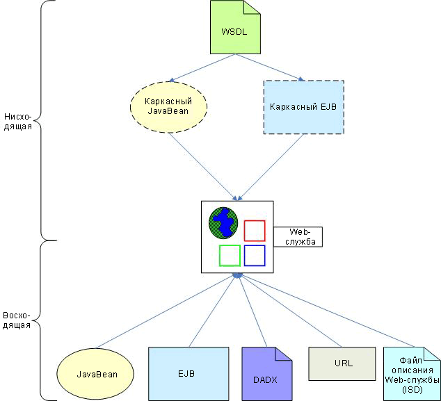

Введение
RAD 6.0 содержит широкий набор инструментов для обнаружения, создания, тестирования, развертывания и публикации
Web-служб. Эти инструменты позволяют разрабатывать Web-службы, соответствующие последним стандартам, и поддерживают
развертывание в разных средах выполнения. Они также содержат мастеры для применения разных методов разработки. В этом
документе описаны разные подходы к созданию Web-служб, предусмотренные в RAD 6.0. Здесь также приведены замечания по
развертыванию и совместимости Web-служб.
Методы разработки
Мастеры в RAD 6.0 участвуют в создании Web-служб с помощью нисходящего или восходящего метода. Нисходящий метод
позволяет начать с документа WSDL (Web Services Description Language) и создать каркас объекта JavaBean или объекта EJB
(Enterprise JavaBean), на основе которых можно создать Web-службы. Восходящий метод предполагает создание Web-службы на
основе существующего объекта JavaBean, объекта EJB, файла DADX (Document Access Definition Extender), адреса URL
(Uniform Resource Locator) или файла описания Web-службы (ISD). На рисунке 1 изображены методы создания Web-служб с
помощью RAD 6.0.

Рисунок 1 - Методы создания Web-служб RAD 6.0
Мастер создания Web-службы позволяет:
-
Провести тестирование Web-службы сразу после ее создания с помощью Web Services Explorer.
-
Создать интерфейс клиента, который можно использовать в приложениях клиента для доступа к Web-службам.
-
Провести тестирование интерфейса клиента с помощью универсального клиента тестирования (UTC) или примера приложения
JSP, созданного UTC.
-
Опубликовать Web-службу в UDDI с помощью Web Services Explorer.
Разработанные в RAD 6.0 службы нужно создавать в рамках Web-проекта или проекта EJB. Продукты работы этих служб должны
соответствовать следующим стандартам:
-
Язык описания Web-служб (WSDL) версии 1.1
-
Простой протокол доступа к объектам (SOAP) версии 1.1 (включая Apache SOAP 2.2 и 2.3)
-
UDDI (Universal Description, Discovery, and Integration) версии 2.0
-
Язык проверки Web-служб (WSIL) версии 1.0
-
JAX-RPC (API Java для RPC на основе XML), также известный как JSR-101
-
JSR-109 и JSR-921 (Реализация Web-служб J2EE)
-
Совместимость Web-служб (WS-I) Basic Profile 1.0 (рекомендуемая совместимость)
-
WS-Security
Дополнительная информация приведена в разделе Концепции: Web-службы для J2EE.
Нисходящий метод разработки
Нисходящий метод позволяет реализовать Web-службу на основе ее абстрактного определения, приведенного в документе WSDL.
(Примечание: в RAD 6.0 предусмотрен мастер для создания документов WSDL). В рамках этого метода можно выбрать два
подхода:
-
Создание каркаса объекта JavaBean на основе документа WSDL
Можно создать каркас объекта JavaBean на основе документа WSDL и использовать его как Web-службу.
Сгенерированные методы объекта JavaBean соответствуют операциям, описанным в документе WSDL и содержат
упрощенную реализацию, которую можно заменить. Ниже приведены замечания по применению этого подхода и его
продуктов работы:
-
Можно ввести URI документа WSDL, либо URI документов WSIL или HTML, ведущий к файлу WSDL, который является
источником Web-службы.
-
Файл WSDL должен содержать элемент службы. При необходимости можно создать стандартный справочный документ
WSDL (WSIL) для новой Web-службы.
-
Web-службу необходимо создать в рамках Web-проекта.
-
Создание каркаса объекта EJB на основе документа WSDL
Этот поход также, как и предыдущий, предполагает создание каркаса сеансового объекта EJB без сохранения
состояния на основе документа WSDL и представление его в качестве Web-службы. Методы объекта EJB соответствуют
операциям, описанным в документе WSDL, и содержат упрощенную реализацию, которую можно заменить. Ниже приведены
замечания по применению этого подхода и его продуктов работы:
-
Этот подход можно применять только если для Web-службы установлена среда выполнения IBM WebSphere версии 6
(см. Зависимости развертывания).
-
Можно ввести URI документа WSDL, либо URI документов WSIL или HTML, ведущий к файлу WSDL, который является
источником Web-службы.
-
Файл WSDL должен содержать элемент службы. При необходимости можно создать стандартный справочный документ
WSDL (WSIL) для новой Web-службы.
-
Web-службу необходимо создать в рамках проекта EJB. Для получения Web-службой запросов через транспортный
протокол HTTP создается проект маршрутизатора. (Примечание: В этом подходе не поддерживается транспортный
протокол JMS.) Проект маршрутизатора может быть Web-проектом или проектом EJB, но не может совпадать с
проектом, содержащим Web-службу. Однако он должен находиться в том же файле EAR.
Восходящий метод разработки
В восходящем методе разработки существующий компонент или ресурс приложения преобразовывается в Web-службу. Ниже
перечислены возможные подходы.
-
Создание Web-службы на основе объекта JavaBean
Этот подход позволяет выбрать существующий объект JavaBean и преобразовать его методы в Web-службу. В
результате будут созданы следующие продукты работы:
-
Файл WSDL: Этот файл содержит описание Web-службы и обладает расширением .wsdl. Можно выбрать стиль WSDL
(Документ/литеральный, RPC/литеральный или RPC/кодированный). Для установления совместимости каждой опции
см. Совместимость с WS-I Basic Profile.
-
Service Endpoint Interface (SEI): Этот интерфейс Java определяет методы Web-службы. Имя его файла содержит
суффикс _SEI.
-
Файл описания Web-службы: Файл webservices.xml, в котором содержатся сведения о реализации и развертывании
Web-службы.
-
Файлы связей JAX-RPC: В этих файлах содержится информация, как связать элементы Java Web-службы с WSDL и
наоборот.
-
Создание Web-службы на основе объекта EJB
Методы сеансового объекта JavaBean без сохранения состояния можно использовать как Web-службу. Сгенерированные
продукты работы совпадают с продуктами, созданными для объекта JavaBean, и включают файл WSDL, SEI, файл
описания Web-службы и файлы связи JAX-RPC. Ниже приведены замечания по применению этого подхода и его продуктов
работы:
-
Web-службу необходимо создать в рамках проекта EJB.
-
Для получения Web-службой запросов от клиентов необходимо создать проект маршрутизатора. При использовании
протокола SOAP с HTTP создайте проект маршрутизатора как Web-проект. Если клиент использует SOAP с JMS,
создайте проект маршрутизатора как проект EJB (в данном случае маршрутизатор JMS реализуется как
принимающий объект JavaBean). Проект маршрутизатора и проект Web-службы не могут совпадать, но должны
находиться в одном файле EAR.
-
При использовании протокола SOAP с JMS на сервере необходимо настроить провайдер JMS. Для тестирования
Web-службы также нельзя использовать Проводник Web-службы.
-
Создание Web-службы на основе файла DADX
Этот подход позволяет свернуть данные DB2, извлеченные через DB2 XML Extender или через операторы SQL внутри
Web-службы. Данные, извлеченные через DB2 XML Extender, состоят из документов XML, которые связаны с базой
данных DB2 с помощью документа DAD (Document Access Definition). В данном подходе необходимо начать с файла
DADX, где указано, как создать Web-службу с помощью набора операций, заданных в стандартных операторах SQL или
файле DAD. Продукты работы включают стандартный файл WSDL, SEI, файл описания Web-службы и файлы связи JAX-RPC.
Ниже приведены замечания по применению этого подхода и его продуктов работы:
-
Этот подход можно применять только если для Web-службы установлена среда выполнения IBM SOAP (см.
Зависимости развертывания).
-
При необходимости можно создать файл DADX на основе комбинации из одного или нескольких операторов SQL,
хранимых процедур и файлов DAD.
-
Файл DADX должен находиться в группе DADX, которая определяет соединение JDBC и другую информацию, общую
для файлов DADX этой группы.
-
Web-службу необходимо создать в рамках Web-проекта.
-
Создание Web-службы на основе URL
На основе URL можно создать Web-службу, которая будет устанавливать соединение с сервлетом, запущенным на
удаленном сервере. С помощью мастера можно создать описание интерфейса сервлета (указать порты, операции и
параметры), а также создать документ WSDL, в котором будет описана новая Web-служба. Ниже приведены замечания
по применению этого подхода и его продуктов работы:
-
Этот подход можно применять только если для Web-службы установлена среда выполнения IBM SOAP (см.
Зависимости развертывания).
-
Обычно порт задает домен и имя хоста URL, операция - корень контекста сервлета URI и часть URI, а параметры
- входные параметры сервлета.
-
Web-службу необходимо создать в рамках Web-проекта.
-
Web-служба не подлежит развертыванию, так как она уже была реализована активным URL.
-
Создание Web-службы на основе файла описания (ISD)
При развертывании Web-службы атрибуты ее конфигурации и выполнения записываются в файл описания ISD. В этом
файле содержатся данные о службе, доступные клиентам через среду выполнения SOAP. К этим данным относятся URI,
методы, классы реализации (объекты JavaBean и EJB), сериализаторы и десериализаторы. С помощью этой информации
можно создать Web-службу на основе файла ISD. Это позволяет свернуть существующие экземпляры реализации
Web-службы и вновь развернуть их как новые Web-службы, не указывая второй раз данные конфигурации и связывания.
Ниже приведены замечания по применению этого подхода и его продуктов работы:
-
Этот подход можно применять только если для Web-службы установлена среда выполнения IBM SOAP (см.
Зависимости развертывания).
-
Web-службу необходимо создать в рамках Web-проекта.
Рекомендации по разработке
Ниже приведены важные замечания по разработке Web-служб в RAD 6.0. Эти замечания касаются доступных опций, основанных
на требованиях развертывания Web-службы и соответствия WS-I.
Зависимости развертывания
Возможность применения нисходящего или восходящего методов создания Web-службы зависит от среды выполнения, где будет
выполняться развертывание. В RAD 6.0 поддерживаются следующие среды выполнения Web-служб:
-
IBM WebSphere версии 6
Это среда выполнения по умолчанию. Рекомендуется для применения в процессе разработки. В этой среде
поддерживаются транспортные протоколы JMS и HTTP, которые позволяют устанавливать соединение между серверам и
клиентам Web-службы с помощью HTTP или очередей и тем JMS. Обратите внимание, что если доступ к Web-службе
осуществляется через транспортный протокол JMS, она должна быть реализована на основе объекта EJB.
-
IBM SOAP
Среда выполнения IBM SOAP поддерживает протоколы Apache SOAP версий 2.2 и 2.3 (см. Ресурсы). В WebSphere Studio
версии 5.0 и ниже это была единственная поддерживаемая среда выполнения Web-служб. Ее следует использовать
только для достижения совместимости с предыдущими версиями.
-
Apache Axis 1.0
Эта среда выполнения поддерживает реализацию SOAP Apache Axis версии 1.0 (см. Ресурсы). Ее не рекомендуется
использовать из-за возможной несовместимости Web-службы (см. в оглавлении Справки инструмента раздел Ошибки при
работе со средой выполнения Apache Axis 1.0).
Если для работы целевого сервера развертывания не обязательно использовать Apache SOAP или Apache Axis, рекомендуется
установить среду выполнения WebSphere версии 5. Однако если использование Apache SOAP или Apache Axis необходимо,
будьте готовы к ограничениям, описанным в разделе Справки Ограничения Web-служб. В таблице 1 приведен краткий обзор
подходов к созданию Web-служб с помощью RAD 6.0 для каждой среды выполнения.
|
Подход
|
IBM WebSphere v6
|
IBM SOAP
|
Apache Axis 1.0
|
|
Создание каркаса объекта JavaBean на основе документа WSDL
|
Да
|
Да
|
Да
|
|
Создание каркаса объекта EJB на основе документа WSDL
|
Да
|
Нет
|
Нет
|
|
Создание Web-службы на основе объекта JavaBean
|
Да
|
Да
|
Да
|
|
Создание Web-службы на основе объекта EJB
|
Да
|
Да
|
Нет
|
|
Создание Web-службы на основе файла DADX
|
Нет
|
Да
|
Нет
|
|
Создание Web-службы на основе URL
|
Нет
|
Да
|
Нет
|
|
Создание Web-службы на основе файла описания службы (ISD)
|
Нет
|
Да
|
Нет
|
Таблица 1 - Подход к созданию Web-служб, поддерживаемый средой выполнения
Соответствие WS-I Basic Profile
Web Services-Interoperability (WS-I) Basic Profile - это набор требований, установленных организацией WS-I для
достижения совместимости Web-служб, работающих на разных платформах, под управлением разных операционных систем и
написанных на разных языках программирования. В WS-I Basic Profile установлены требования к трафику протокола
(SOAP/HTTP) и документу WSDL Web-службы. В RAD 6.0 предусмотрены инструменты для проверки Web-службы на соответствие
требованиям WS-I Basic Profile 1.0. Перед созданием Web-службы в рабочей области или проекте можно задать уровень
соответствия WS-I (Обязательно, Рекомендовано, Игнорировать (уровень по умолчанию)). Проверку можно провести и после
создания службы с помощью соответствующих инструментов.
Рекомендуется создавать Web-службы, отвечающие требованиям WS-I Basic Profile. Для этого необходимо следовать следующим
рекомендациям:
-
В WSDL рекомендуется использовать стиль Документ/литеральный или RPC/литеральный (стиль RPC/кодированный не
отвечает требованиям WS-I)
-
В качестве транспортного протокола и протокола сообщений используйте SOAP с HTTP (SOAP с JMS не отвечает
требованиям WS-I)
-
Не используйте опции защиты Web-служб (Цифровая подпись XML и кодирование XML не отвечают требованиям WS-I)
Замечания по клиентскому серверу Proxy
-
При создании Web-службы можно по желанию создать два вида клиентских Proxy:
Клиентский Proxy объекта JavaBean позволяет вызывать методы Web-службы с помощью вызова удаленных процедур (RPC).
Если в качестве среды выполнения клиента выбран IBM SOAP или Apache Axis 1.0, клиентский Proxy можно создать только
в Web-проекте клиента. В среде выполнения клиента IBM WebSphere версии 6 его можно создать в Web-проекте, проекте
Java, проекте EJB или проекте приложения-клиента.
-
Пользовательская функция Web-службы
С помощью этой опции можно создать пользовательскую функцию (UDF) DB2 для каждого вызываемого метода Web-службы.
Для этого в базе данных необходимо установить пакет DB2 Web Services Сonsumer UDF и DB2 XML Extender.
Пользовательская функция (UDF) создается и добавляется к определению базы данных со всеми связанными продуктами
работы клиента, хранящимися в Web-проекте.
-
Для минимизации количества ошибок выполнения поместите Web-службу и клиент Web-службы в разные файлы EAR. Обратите
внимание, что клиент обычно представляет собой приложение, отличное от Web-службы, а Web-службы обычно не участвуют
во взаимодействии между приложениями.
Ресурсы
Для получения дополнительной информации перейдите по соответствующей ссылке.
|